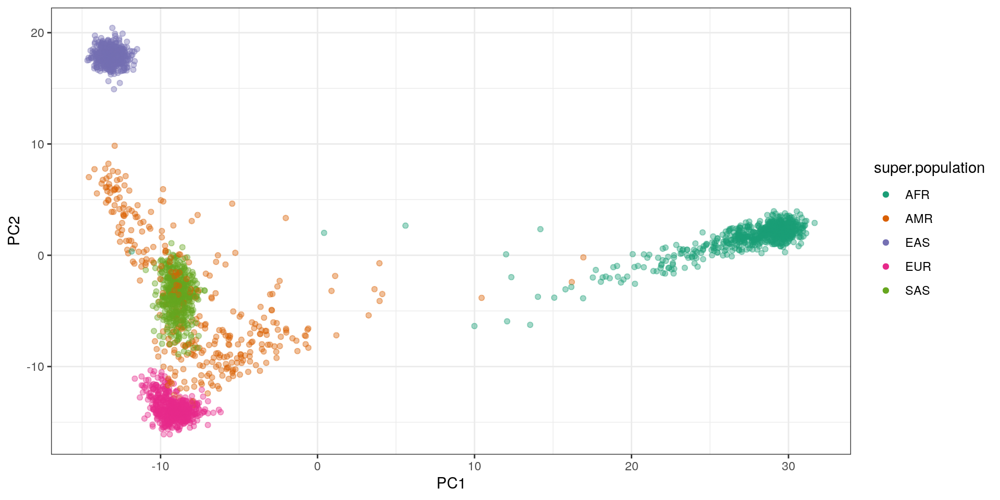
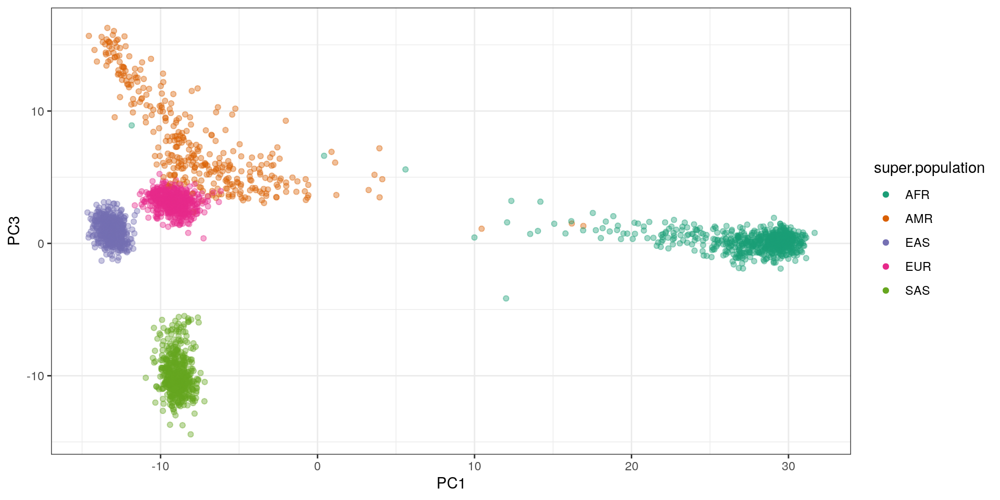
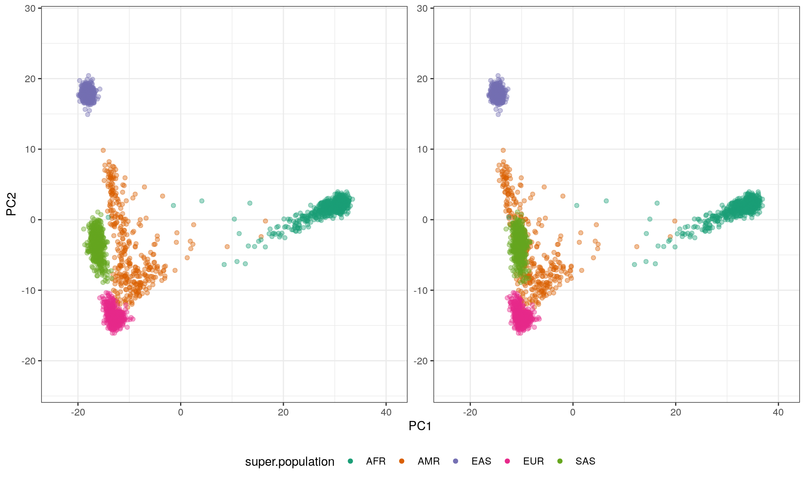
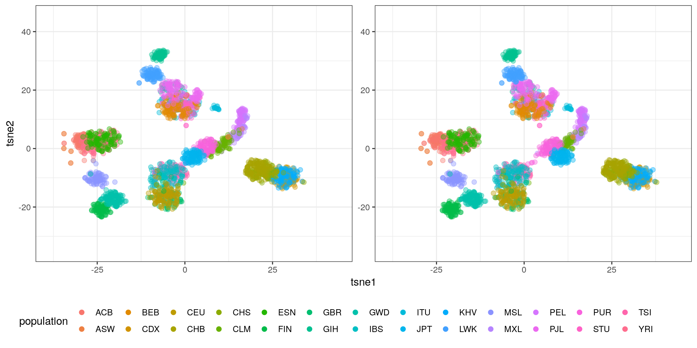

Stereograms of the 1KGP PCA/tSNE
Nov 19 2019 R plotWhat is stereoscopy? How to look at a stereogram?
Technique for creating or enhancing the illusion of depth in an image by means of stereopsis for binocular vision.
Although some binocular-like devices can be used to merge two images and create the illusion of depth, there are also “freeviewing” techniques that don’t require any particular material. The two main techniques are to either look straight through the image or to cross your eyes. Wikihow has some tips for the “parallel” method.
I knew about the autostereogram (I had a book of “magic images” as a kid), like this example from Wikipedia:

Let your eyes see through the image and you’ll see a shark appear.
Side-by-side images were new to me. It’s the same principle though: either let your eyes look through or cross your eyes until both images overlap. An example from Wikipedia:

Cross your eyes to align both images and create a new one in between.
For the side-by-side images I find it easier to use the cross-eye technique because it’s easy to adjust how much to cross my eyes to overlap both images.
I also noticed that it’s important to have my head straight (both eyes are on the same plane). When using the cross-eyed method, it helps tilting slightly the head on one side or the other to align the two images vertically.
Making a PCA stereogram using the 1000 Genomes Project data
Now let’s see how to make a stereogram of the typical PCA plot using the 1000 Genomes Project data. We’ll use PC1/PC2 for the x/y axis, as usual, and PC3 for the “depth” dimension.
I downloaded a subset of variants in the 1000 Genomes Project Phase 3 that had at least 10 alternate alleles in called genotypes in autosomes (0.1% of variants with AC>=10).
I used the autosomes’ VCFs at ftp://ftp.1000genomes.ebi.ac.uk/vol1/ftp/release/20130502/ALL.<CHR>.phase3_shapeit2_mvncall_integrated_v5a.20130502.genotypes.vcf.gz.
Homozygous refs were then converted to 0, heterozygous variants to 1 and homozygous alts to 2.
The typical PCA looks like this:
ggplot(pca.df, aes(x=PC1, y=PC2, color=super.population)) +
geom_point(alpha=.4) + theme_bw() +
scale_color_brewer(palette='Dark2') +
guides(colour=guide_legend(override.aes=list(alpha=1)))
ggplot(pca.df, aes(x=PC1, y=PC3, color=super.population)) +
geom_point(alpha=.4) + theme_bw() +
scale_color_brewer(palette='Dark2') +
guides(colour=guide_legend(override.aes=list(alpha=1)))
Now the same data with a stereogram using the ggforce R package:
## add some white space around the points
extra.margin = .2
pc1.r = range(pca.df$PC1)
pc1.r = pc1.r + c(-1,1)*extra.margin*diff(pc1.r)
pc2.r = range(pca.df$PC2)
pc2.r = pc2.r + c(-1,1)*extra.margin*diff(pc2.r)
##
ggplot(pca.df, aes(x=PC1, y=PC2, depth=-PC3, color=super.population)) +
geom_point(alpha=.4) + theme_bw() +
scale_color_brewer(palette='Dark2') +
guides(colour=guide_legend(override.aes=list(alpha=1))) +
facet_stereo(IPD=-63.5) + theme(legend.position='bottom') +
xlim(pc1.r) + ylim(pc2.r)
A few notes:
- I specified the limits of the graph to add a bit of white space around the points. It helps a bit IMO.
- I specified
IPD=-63.5to switch to “cross-eyed’ mode. The default isIPD=63.5for the”parallel" technique. I could only manage the “parallel” viewing by making the plot very small.
The result is pretty cool, we can tell that the SAS are in front of all other points, and that the branch of AMR is stretching to the back.
It’s fun to imagine showing these graphs during a presentation and watching a crossed-eyed audience like:
Making a tSNE stereogram using the 1000 Genomes Project data
A tSNE with 3 components using the top 30 PCs looks like this:

The blobs are nicely separated in 3D. We can clearly see some blobs corresponding to single populations.